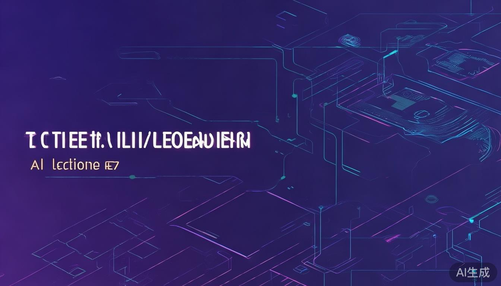

白驹 ccowork · 科学实验室
工科实训项目（真动手清单）
从"看懂了"到"做出来"，这些项目都能在本目录或免费开源工具里完成。
1. 机械/控制类
- PID 温控仿真：用
01_pid_controller.py改造，加噪声、调参，观察超调。 - 倒立摆/小车：用 Gazebo + ROS 仿真，再学 PID/LQR。
- 弹簧振子：改
02参数，验证阻尼比对衰减的影响。
2. 电气/电子类

- RC/RL 暂态：跑
04_rc_circuit.py，再用 ngspice 画同一条曲线对比。 - 放大电路：LTspice 搭共射放大电路，仿真增益与频率响应。
- PCB 设计：KiCad 画一块最小系统板。
3. 数控/制造类
- G 代码仿真：把本目录 3 个 .nc 拖进 CNCjs/NC Viewer 看刀路。
- 生成一个零件：让 AI 生成一个"六边形法兰"的 G 代码，逐行复核、仿真。
- 3D 打印：学切片软件（Cura/PrusaSlicer），打一个机械零件。
4. 编程/数据类
- 物理仿真库：把 5 个仿真脚本整合成一个带命令行参数的
simlab.py。 - 测试驱动：给每个仿真补 pytest 测试，覆盖边界条件。
- 可视化：用 matplotlib 给仿真画曲线、动画。
5. 综合实训（毕业级）
- 数字孪生小系统：选一个简单系统（如水箱液位），建模型 Python 仿真 用 PID 控制 写成带测试的完整项目 写成报告。
- 全程让 AI 结对：DeepSeek 出方案、Cursor 写码、AI 查错，你负责理解与拍板。
每完成一个，就写一篇"实训报告"（目的/原理/步骤/结果/反思），这才是真正的工科实训闭环。